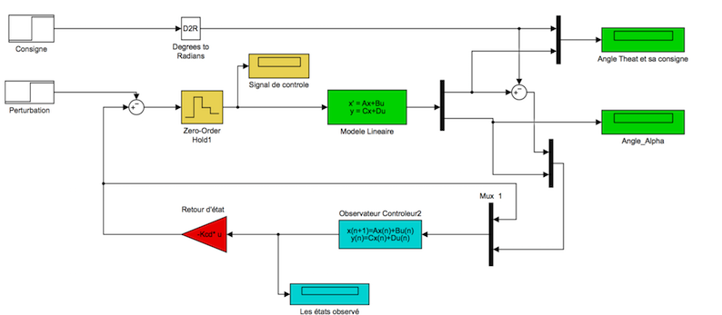

Design of Observer-Controller Control Law for Rotary Inverted Pendulum
Contents
Goals
- Study the inverted pendulum modelling and obtain its linear state space model.
- Stabilization of inverted pendulum in the upper vertical position () following the specifications given in the related topic.
- Obtain the discrete observer-controller in state space form respecting the name of matrix parameters declared in the dSPACE/Simulink file Observateur_Controleur_Dspace_IMC.
- Implementation of the control laws in dSPACE and test it on the real inverted pendulum.
Given Matlab/Simulink files and work to be done
- Modele_Pendule.m: State space model of opened loop inverted pendulum based on the data provided by the constructor.
- Observateur_Controleur_Dspace_IMC.slx: Observer-Controller discrete model used to generate the real time controller code.
- Contruct the inverted pendulum open loop state space model in Simulink and analyse its stability, reachability and observability.
- Design a continuous observer-controller capable to stabilize the inverted pendulum in its upright position. Realize the Simulink control scheme based on the figure given in the related topic and give it the name Pendule_Observateur_Controleur_Continu.slx and conduct the necessary tests.
- Design a discrete observer-controller capable to stabilize the inverted pendulum in its upright position. Realize the Simulink control scheme based on the figure given in the related topic and give it the name Pendule_Observateur_Controleur_Discret.slx and conduct the necessary tests.
clear all,
clc;clf;
Model of Ratary Inverted Pendulum

Modele_Pendule
Specifications
The pendulum is a fourth order system whose closed-loop dynamic given by its characteristic polynomial will be decomposed into a second order polynomial followed by two first-order polynomials (). Specifying the response time and the damping ratio we can determine and thus calculate the closed loop dominant poles of inverted pendulum (). The other two poles should be selected stable and sufficient fast compared to dominant poles and consistent w.r.t actuators capacities and pendulum structure.
z=1 ; % amortissement zeta Tr=0.75 ; % Temps te réponse à 5% w0_Tr=4.5; % woTr=4 w0=w0_Tr/Tr; % wo en boucle fermée p1=-z*w0; % 1er pôle dominant p2=-z*w0+0.001; % 2ème pôle dominant qui doit être different par rapport au premier afin que la commande place() focntionne p3=-6.1*z*w0; % 3ème pôle très rapide par rapport aux deux premiers p4=-6.2*z*w0; % 4ème pôle très rapide par rapport aux deux premiers Pc=[p1 p2 p3 p4]; Po=3*Pc; % Choix des pôles de l'observateur naturellement plus rapides que ceux du système en boucle fermée cas='discret'; switch cas
Design of the observer-controller control law for the continuous case.
- Calculate the feedback gains supposing that the pendulum state is measurable.
- Calculate the feedback observer gains supposing that we mesure only the angles thetat and alpha and using the dual linear model
 .
. - Construct the Simulink scheme and operate the necessary simulations in order to verify the stability and the defined performances of the feedbacked inverted pendulum.
- Give the most significant results and illustrate your conclusions

case 'continue'
X0=[0.3 0 0 0]';
X0_o=[0 0 0 0]';
Kc=place(A,B,Pc);
Ko=place(A',C',Po);
Ko=Ko';
Ao=A-Ko*C;
Bo=[B Ko];
Co=eye(4,4);
Do=zeros(4,3);
Design of the observer-controller control law for the discrete case.
- Calculate the feedback gains supposing that the pendulum state is measurable.
- Calculate the feedback observer gains supposing that we mesure only the angles thetat an alpha and using the dual linear model .
- Construct the Simulink scheme and operate the necessary simulations in order to verify the stability and the defined performances of the feedbacked inverted pendulum.
- Give the most significant results and illustrate your conclusions

case 'discret'
T_ech=0.005;
X0=[0.3 0 0 0]';
X0_o=[0 0 0 0]';
[Ad,Bd]=c2d(A,B,T_ech)
Cd=C;Dd=D;
Pcd=exp(Pc*T_ech);
Pod=exp(Po*T_ech);
Kcd=place(Ad,Bd,Pcd);
Kod=place(Ad',Cd',Pod);
Kod=Kod';
Aod=Ad-Kod*Cd;
Bod=[Bd Kod];
Cod=eye(4,4);
Dod=zeros(4,3);
end
%Observateur_Controleur_Dspace_IMC;
Ad =
1.0000 0.0006 0.0046 0.0000
0 1.0009 -0.0003 0.0050
0 0.2148 0.8302 0.0006
0 0.3717 -0.1201 1.0009
Bd =
0.0008
0.0006
0.3052
0.2160